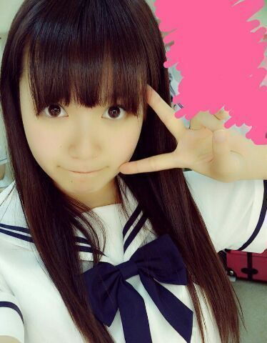
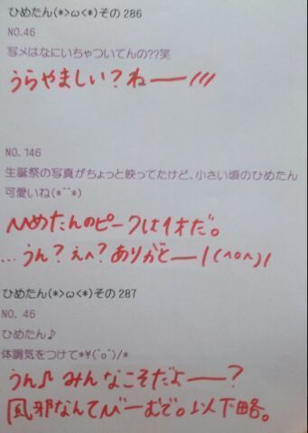
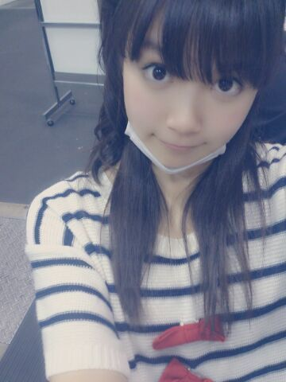
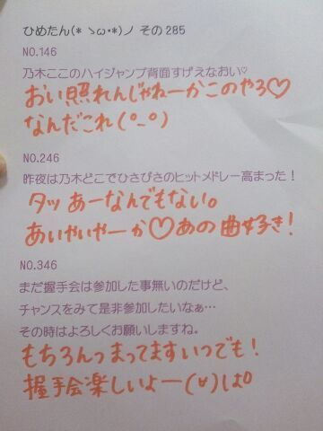
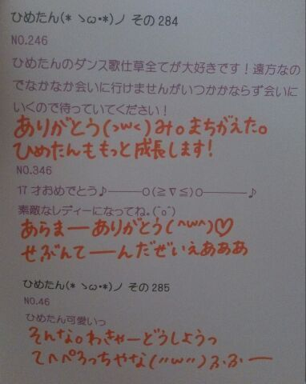
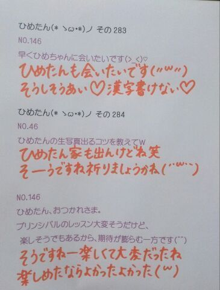
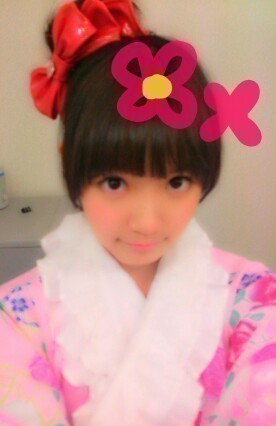
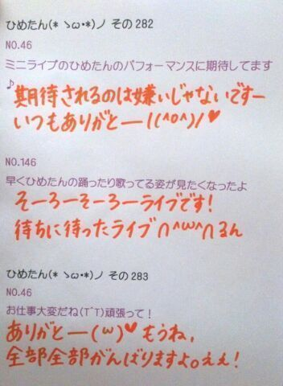

たぶんプリンシパルの時期。
今度こそおわーたーよー
世界史返ってきたら、
きちんと報告するからね
楽しみにしててね( ^ω^ )げろげろげろー
夏！
あのねー夏サンダル買ったのー
あのねっだからねっそのねっ
また個握ん時にみせるねー
だからね、覚えててね！
そしてブログにも貼るねーいつかね
思い出した頃に貼るね！
でもね買ってすぐにはいて歩き回ってたら
脚が。いやこれ以上言わんでおくね
うふーちゃんと濁せてるかな(´・ω・｀)
みなさーんは最近
なんか服買ったよーとかありますかー？
この夏は
↑ここまで書いて昨日寝てたんだけど
え(´・ω・｀)何(´・ω・｀)(´・ω・｀)
まーいーやー
とりあ今日は学校もお仕事もなく
なんにもありませんでしたー
なのでプールに行って
紫のおばあさんと仲良くなりましたー
お昼寝してたら雷の音で起きましたー
明日はお仕事がんばるぞ(｀・ω・´)
そろそろ朝日新聞 ひめたんの番よ
チェックよろしくねー♪

 メンバーみんなで
メンバーみんなで
いろいろしてるじゃないですか？
その中で一番大変だったのと、
一番楽しかったのってなんですか？？( ´∀｀)今回のプリンシパルは
ちょっと心理戦みたいなとこあって
なんか辛かったかな(´・ω・｀)
遠征するとき一緒にホテルでお泊まりするのは
もういつも楽しい。
ペアもね行ってから発表されるから
いつもどきどきよー
まだ一緒にお泊まりしたことない子もいつか！
そうだ制覇しよう！
オススメの本教えて！「五体不満足」
物語はなんだろう。自伝が好き。
全国握手会（幕張）ひめたんレーン
並んでもいいですか？？
あと、どんなことしたら覚えてくれる？？？待ってる！待ってる待ってるよー♪
どんな...ことかなー
ちょっと服装とかに特徴があったら
もしかしたら覚えちゃうのかなー
ぴんく着てくれたら嬉しーよー(〃ω〃)
 全握で初ひめたんに行くべきか、
全握で初ひめたんに行くべきか、
個握で初ひめたんに行くべきか、
どちらがお好みですか？ライブも見たければ全握
ゆっくりお話したければ個握
お任せしますよ( ^ω^ )ありがとー！
ひめたんビームをくらった時の叫び方で
正しい叫び方はどんなのですか？正しい...なんだろね
正解はないんだけどね、でも
しーん、ってなるのはひめたんがちょっと
あってなるのでねー
何かしらアクションがあったら嬉しいでーす
この前まいまいにひめたんびーむが
直撃したみたいですが、
直撃するとどおなるのですか？まいまいは「はー///」ってなってたような
そんな記憶がうっすらあります
個人差はあるかもしれない。
まいまいとの写メ
すっごい穏やかな雰囲気に包まれている
気がするのは...なぜ(゜Д゜;)？それは受けてくれた相手が
まいまいだからでーす(゜Д゜;)
カフェラテとカフェモカの違いが
分かりません。何が違うと思う？ひめたんにも飲めるのがカフェラテ
ごめんなさいこれしかわからん(´-ω-`)
すっぴんでいってるメンバー多いの？うーんメイクしてる子のが多いかな♪
秋田組おかえりなさいー☆
えってかね
前回のブログの服のね
りぼんがやる気ないの。へにゃって。

シャレじゃない、先にゆっとくね。
お中元きた！
(＊´・ω・＊)
期末終わってあー！
正確に言やあ明日もテストあるんですが
正確に言やあ明日もテストあるんですが
正確に言やあ明日もテストあるんですがっっ
とりあ期末は終わりました( ^ω^ )
みーなさーんお待たせっただいまっ
応援してくれた方ありがとーう///

２期生ブログリレーを
ぼーっと読んでたら
中元さんの名前でてきてびびったよー
米徳たーん
ひめたーんと誕生日１日違いなんだね！
来年は一緒にお祝いしようねー(〃ω〃)
それから、ひめたーんでいいんだよー
ひめたーんのたーんは音上げ気味で
はーいごめんね黙りますよー
 テスト前でいらいらするんだけど
テスト前でいらいらするんだけど
何かいい息抜きの方法とかない(´・ω・`)？ウォーキングとか良いと思われ。
ひめたんってテストの前日って
夜遅くまで勉強する派？
それとも、朝早く起きて勉強する派？
はたまた、何もしない派？いままでは夜遅くまでやってたけど
最近はすぐ寝ちゃって
勉強にならない(´・ω・｀)
新曲の衣装はやっぱり
チーム松村のセーラータイプが
着たかったんですか？着たかったです！着ますーっ！
とっても可愛いひめたんですが、
可愛くて得したこと、損したことを
教えてくださいヾ(＠⌒ー⌒＠)ノ可愛くないけど、そーゆーときは
ありがとうっていうんだよーって
ひめきゅんさんに教わったので
ありがとーう(｀・ω・´)

(＊´・ω・＊)
らすと１日！で期末終わる！
期末終わっても土曜もテストだけどね(´・ω・｀)
1158 ひめたんのとっておきダイエット方法あったら教えて?
ひめたんのとっておきダイエット方法あったら教えて?一時期、痩せたねーっていろんな人にほめてもらったことがあったんだけどその時はプール通ってましたかな(*^^*)
やっぱりプールは健康的なダイエット方法だと思うよ〜♪あたしも行かねばーっ!
1159脱甘い物してるひめたんブログを読みながら饅頭を食べ、カフェオレを飲んでいますそんなファンをどう思いますか?wwwひめたんの代わりに美味しいものを満喫して、幸せになってくれてありがとう。
...てことにしておいてください('・ω・`)
1160ひめたんにツンデレしてもいいのかな?(笑)いいけど、ひめたんはそんなに器用な人じゃないから
でれでれしてくれる人が好きなんだけどな??
1161握手会のときにこんなことを話してもらえるとうれしい、とかはある?ひめたんの好きなところを延々と熱く語る
とかゆーて。
1162お誕生日のお手紙、大阪の握手会の時でいいかな?待ってる(^^)!
ありがとうございます☆
1163たこ焼きかお好み焼きどっちが好きなん?たこは食べれないけどやきは大好きだよひめたん。
お好み焼きは広島風がいいな。え?せっかく関西いくのにって?わら
1164個別で言ってもらいたい言葉があるんですが...リクエストしても良い...?何ですかなんですかー
なんなりとお申し付けくださいよ＼(^O^)／
1165次がまだひめたんに会うの大阪のミニ握以来の２回目なんだけど、ブログのコメントしてる名前言ったら覚えてくれる??おお!2ヶ月ぶりってことですね♪
ブログの名前言ってくれたら「ああ!」ってなりますよー言っていって♪
じゃあ久しぶりにあえるの楽しみにしてるんるん(^^)
1166手紙やプレゼントを送ろーって思ってたんだけど、どう頑張っても間に合わないーっ(>_<)大阪の個握で渡そうかなーって(^^;)...いいですか?てか許しくださいね?ありがとうございますっ
いつでもいいですよってかむしろ嬉しいし申し訳ないし
ありがとうございます!
1167ひめたんの大阪の思い出はどんなのがあるかな?ある日ぱぱとままに「ドライブ行くよー♪」って
広島から大阪までドライブしました(^O^)
で食い倒れして日帰り!
素敵でしょー???
1168大阪の全握では日芽香ちゃんのパフォーマンスを観れるかな?期待大∩^ω^∩
とかゆーて自分で自分のハードルをあげてみたり。
まあ間違いなく中元さんのパフォーマンスみれますよ(^^)
1169ゴールデンウィークに広島帰るんじゃけど、最近の広島のオススメスポットorグルメはなんかありますか?ゴールデンウィークといえばフラワーしか(o>ω<o)!
最近はひめたんも東京おるけわからんのんよね←
何だろう。
1170ぐるぐるカーテン発売イベントお疲れさまでした!!!振り返ってみてどうですか?ということでー
今日は大阪の総括&コメント返しで振り返りしようω!
1171そうそう、全握の時、ひめたんちょっと辛そうだったよね?今の体調は大丈夫かな?あー心配かけてごめんなさい('・ω・`)
あんときは暑さからか、途中不覚にもぼーっとしてしまった...
本当にごめんなさいっ
休憩中に水分糖分とってごろーんしてたから復活しましたよ♪
今はもちろん元気すぎる(o>ω<o)!
1172大阪で美味しいものは沢山食べれたかな?差し入れりすと!
たこ焼き、豚まん、堂島ロール、串カツ☆
全部食べたら間違いなくぶたさんになっちゃうね
1173串カツ食べた?串カツは好き?ケータリングで食べた♪
串カツ好きよ!大阪流のタレ二度つけ禁止!みたいな串カツ
今度食べてみたーい(^^)
1174タコ焼きのタコは誰にあげたん?笑っ るんるん(斎藤ちはるchan)!
ひめたんがタコだけ出してお皿の外に追いやってたら優しいるんるんが食べてくれた(*^^*)さーすが!
1175大阪のお土産何買ったのかなー?(*・ω・*)なんも買えんかった...。
途中京都と静岡のインターにも降りたんだけど寝ぼけててすっかりだった('・ω・`)
1176自己紹介の時は、年甲斐になく、大声でひめたんと叫んでいたけど、届いたでしょうか?としなんて関係なーい!
届きましたよ♪ありがとうございます(o>ω<o)
1177大阪終わって、何か達成感があったかな?1stシングル「ぐるぐるカーテン」も終わりかあ。
今まで頑張ってきたな。レッスンや撮影やなんやらかんやらあったけど終わっちゃうなんて寂しいな。
いろんな人に出会えたな。辛いこともあったな。
２ヶ月みんなと一緒に頑張ってこれてよかった(^^)

(＊´・ω・＊)
半分終わったー＼(*´ω`*)／
ひめたん大図鑑とは何か。それは、いわゆる
「過去の質問返しをまとめたもの」って
感じかな。
過去なので時制とかおかしなことになる質問も
中にはあるかもだけど、
ま、そゆことなんでねー

1136 何か決め事ってある!?1137ゲン担ぎとかするの?
何か決め事ってある!?1137ゲン担ぎとかするの?のーっ
ぱんぱんぱんっぎゅっ
ぱんぱんぱんっ
ぱんぱんぱんっぎゅ〜っ
せーのっ
努力!感謝!笑顔!
うちらは乃木坂上り坂!
46!
いえーい＼(^O^)／☆
1138茶髪と黒髪どっちが好きー?1139男の人の髪は短い方が好き?それとも長い方が好き?そーゆーのはあんまよくわかんないかな。
似合ってればどんな髪したって素敵なはず(*^_^*)
1140『スウィーツ男子』ひめたん的どう思う?ひめたんと気が合うじゃないですかー♪♪
かわいいかわいーい!!!
1141今一番旅行しに行きたい場所はどこ?こりあ(・∀・)
1142毎回ひめたんに質問しようと思っても、なかなかいいネタが浮かばない...なんかいい質問ありますか?1143回答してもらうにはどんな質問したらいいんやろう(--;)?1144どんな質問したら採用されますか教えてください1145コメントに書いてある質問は全部答えてるんですか?1146気のせいかな?私の質問がひとつも出てないのは?wwできるだけたくさんの質問に答えたいなっていつも思ってるので今まで答えたことのない質問を優先して答えるようにしてます!
だから、あれっ何で日芽香無視するんよーって思う前にひめたん大図鑑だよ1〜10とそれ以降の過去の記事を読んで同じ質問がないかなって探してみてくださいな♪
1147大阪で食べておきたいものがあれば教えてください。たこなしたこやき!
そういや前にお邪魔した時にたこやき食べてなかった(・ω・)
1148握手会に来た人って、何人くらい覚えてますか?全員数えてたら日が昇る!
てか数えてるうちに多分寝る。寝てまう('・・`)♪
1149握手会っていろんな県から来てる人いると思うけどびっくりしたのはどこから来てる人だった?遠くから来られてる人いた?海外とか?海外からお越しの方にはまだあったことないなあ
ひめたんは北海道や沖縄から来てたらびっくりするし
会場の超近場から来ててもこれまたびっくりするし
結局どこから来てもびっくりする!
乃木坂はこんなとこにまで浸透してるのかーとでもいいましょうか(^ω^)
1150俺の名前、握手会で言えば分かる?わかる自信あるよー(ω)☆
言ってみるしかっ
1151握手会のときにフルネームで呼んでいい?呼んで呼んでっ♪♪
なかもとーひーめかー!
1152乃木ジャーじゃなくてアディジャーで握手行ってもいい?(笑)あ、あでぃじゃ。わら
乃木じゃでなくあでぃじゃ。
一応許可はするけれどもー
1153握手会でコメントしてる名前言ったら覚えてくれる??1154何回ひめたんのとこ行ったら覚えてくれるー??1155ファンの顔とかって覚えてるもんなの?覚えてるよ結構☆
ただし記憶を引っ張り出すのに時間がかかることあるから誰か中元さんの頭をお掃除してくださいなー♪
1156大阪の握手会では名古屋の分まで俺を楽しませてくれる?よしっ約束しましょう!
1157大阪個別もご欠席ってこたあないよね?ないないないよ行くよー!
楽しみすぎて最近全然寝れなーい(o>ω<o)

(＊´・ω・＊)
みんなイベントお疲れさまです(〃ω〃)
ひめたーんもドーム行きたかったなー
でもねーテスト頑張ってきたよー
世界史なんてめちゃ頑張ったので
前回の24点はきっとどーにかなった！
がんばったよいくちゃーん！
Zeppライブの詳細が発表されましたが
みなさんみてみたかな( ^ω^ )？
もうはやくライブリハがしたくてしたくて
ほらーテスト週間になるとやたら
お部屋片付けたいみたいなの
あるじゃないですかー

浴衣ー♪
物販の生写真のやつだよー
今年も浴衣着たいな( ω )

1112 帽子のサイズ、Sでしょ?
帽子のサイズ、Sでしょ?帽子ー???長いことかぶってないわあ(>_<)
1113バスケ経験者なら当然スラムダンクは読んでるよな?俺、全巻持ってるから貸そうか?(笑)スラムダンク...。
名前しか存じ上げません...(>_<)
1114ワンピースは読んでるかな?(笑)ワンピースも読んだことないのよーきゃーごめんなさーい☆!!!
1115家でも甘えん坊キャラなの?家こそって感じ。
ままとわちゃわちゃ戯れてますっ∪・ω・∪♪
1116新しい学校の制服かわいい?ん。可愛いっ(*^^*)!
1117初めて会った人とかどうやって仲良くなる?1118どうやったらいっぱい友達ができますかね??ひめたんの場合、初めましての瞬間からうるさいけえなあ。わらっ
笑顔でいればすーぐ仲良くなれるとひめたんは思います(^^)笑顔大事よ笑顔っ
1119どーしたら笑顔出せますかね?ひめたんも自分の笑顔が嫌いな人だからねー(>_<)気持ちはわかっても、なんかいい事言えない...
意識してたら固い笑顔になっちゃうから、もっと楽しいこと考えたりして
素直に笑ってみてはいかが??
1120薄いピンクがほとんどだけど、ひめたんは薄いピンクかそれとも濃いピンクかな?1121ピンク以外に好きな色はあるのカナ?上の質問は、ひめたんの好みを答えればいいんかな。
どっちも好きよお(*^^*)どぎついピンクは目がちかちかして苦手かもしれん←
パステルカラーなら基本何でも好き☆!きれいっしょ??
1122ここだけは治したい自分の恥ずかしくて困ってるクセはある?そゆのは恥ずかしいから答えない(*/ω＼*)とかゆーて。わら
1123今度はさいたまスタジアムの浦和レッズのホームゲームにも来てね(^o^)1124浦和レッズ好きなんでひめたんにもレッズを応援してほしいっす!大宮も浦和もどっちもおんなじくらい応援しましたよ!
ひめたんも浦和さんのホームお邪魔したい(^ω^)!
機会があったらよろしくお願いします♪
1125リーゼントの男子は好き?似合ってればなんでも(^ω^)
結局、自分に似合う髪型をわかってる人はみんな素敵ですよ♪とかゆーて、自分なにが似合うんだろう。中元さーん。
1126プリキュア好き?初代のなぎさちゃんとほのかちゃんは見てたよ♪♪
２人は好きだったなー//最近は全然見てないや(>_<)
1127普通のカルビと炙りカルビならどっちが好きですか?wwあのう。ひとつ聞いてもいいですかね。
普通のカルビと炙りカルビってそもそも何が違うのー?
何もしてないか炙ったかの違いってことー??
1128鬼のような仕事量こなさなきゃいけない俺に何か一言お願いします!!!鬼!
鬼に負けるなー!!!
辛くなったらひめたんがついてますぞ(`・ω・')
負けそうになったら勇気は左の胸に!ふぁいとー☆
1129辛いの好き?砂肝とどっちが好き?前は辛いの好きだったけど、最近は苦手になってきつつある...。
いやーひめたん砂肝は好きで持ってたとかゆーわけでなくてー
ま確かにおいしいけどー。
1130納豆は付いてるタレで食べる?それとも醤油で食べる?あのー...
納豆は食わず嫌いなのです('・ω・`)
1131幕張のアウトレットパークには来たことってありますか?^^行ったことなーい!!!
行きたいな♪楽しそうやなー(^^)☆
1132ユニバーサルスタジオジャパンに行ったことがありますか?何のアトラクションが好きですか??行ったことある(^ω^)!
ジュラシックパーク!E.T.!
1133ひとりカラオケとかひとりマックできる人でしたっけ?ひとりももクロできますか?カラオケはいけるけどマックは何か辛いものがある。
ひとりももクロちゃん。
これまた辛いものがないですか('・ω・`)?大丈夫?
1134広島では、やっぱり武将って言ったら毛利元就なのかな?1135好きな武将っている?ひめたんは毛利さんもだけど、平清盛さんも尊敬しますよ(^ω^)
みなさん宮島の真っ赤な鳥居を見てごらんなさい。
明日終われば半分終わるー

(＊´・ω・＊)